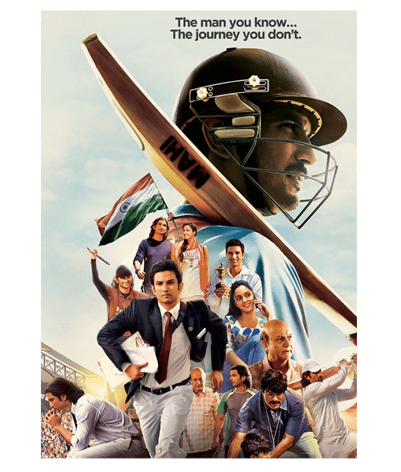

MS DHONI: THE UNTOLD STORY

A life without motivation is a life no worth. As a study says that being motivated in life helps a man to achieve his goal much more efficiently and in less time. Thus, motivation plays a very important role in a man’s life. Motivation helps us to remain focused on our goal and also boosts our performance to great extent. In this digital world, there are unlimited sources to receive motivation, like the Youtube videos, motivational songs, etc. But if we look for a more brighter side, viewing the life of some of the most famous personalities we see today, whose lives when seen, provide no less than a great motivation, meeting some of the toughest situations of life and then raising from them to the extent where they stand today. The biographies of such living legends when seen surely influence the life of an individual to a great extent. So, here we are with another list of the best motivational biographies to watch, reviewing them in the best form.
Ratings
IMDb: 7.7/10
Movie Matrix: 8.7/10
The great Indian Cricket captain whom everyone knows and admires, his biography when watched, boosts up a person’s mind in a rapid rate. The biography “MS Dhoni- The Untold Story”, brings the viewers the whole life story of this living legend, the struggle and motivation and the hurdles that he faced to reach the peak where he stands today, making an impact on people’s life.
The movie was released in 2016, since sharing each and every aspect of Dhoni’s life it extends a bit long for a duration of 3 hours and 4 minutes. The movie shows a great direction of the very known director “Neeraj Pandey” , also having a great cast including “Sushant Singh Rajput” as “MS Dhoni”, where his acting wins heart depecting his brilliant acting skills and dedication. The cast also includes “Kiara Advani”, “Disha Paatni” , “Anupam Kher” and several others playing an important role in the movie. The movie surely contains a pack of motivation along with drama and offcourse the sporting game of cricket.
The biography of captain cool depicts his entire life depecting the growth of interest in cricket , including further problems and struggles that he faced. Though, being from a middle class family, where the family has a lot of expectations from the younger generations, MS’s dedication towards cricket never dropped. The movie brings us some of the life changing turning points and the success and failures the he faced, introducing every person who played a major role in bringing him to this level including friends, family, teacher , collegues and others. The movie surely motivates a person showing how a person’s dedication can make him move mountains. Every one admires Dhoni for what he has done for our country, but after watching the movie, the respect for him goes one more level higher than it was.
Thus, the movie proves to be an extreme dose of motivation and entertainment and is a must watch for everyone. Also, the outstanding acting of the entire cast makes the movie worth watching. Though being of a slight long duration, the movie does not bore you for even a minute and is surely a quality content of no fiction involved. So do give it a watch and enjoy.
ABOUT THE AUTHOR